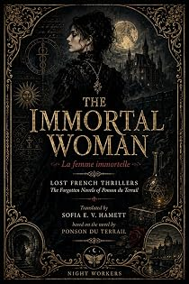

La Femme immortelle
by Pierre-Alexis Ponson du Terrail · translated by Sofia E. V. Hamettpar Pierre-Alexis Ponson du Terrail · traduit par Sofia E. V. Hamett
The bookLe livre
Midnight, the double doors swing open, and a chamberlain announces supper for His Royal Highness Monseigneur Philippe, Duke of Orléans, Regent of France. Few guests, all carefully chosen; Madame de Sabran does the honours; Nocé and Simiane are there. One place at the table is empty. A novel of the Regency at its most sulphurous.
Minuit, les deux battants s'ouvrent, et un chambellan annonce que le souper est servi pour Son Altesse Royale Monseigneur Philippe, duc d'Orléans, Régent de France. Peu de convives, tous choisis avec soin ; madame de Sabran fait les honneurs ; Nocé et Simiane sont là. Une place à table reste vide. Un roman de la Régence dans ce qu'elle a de plus sulfureux.
From the opening pagesLes premières pages
The Enchanted House
The Empty Place at Supper
As midnight struck, the double doors of the dining room swung open and a chamberlain announced that supper was served for His Royal Highness Monseigneur Philippe, Duke of Orléans, Regent of France. There were not many guests, but they had been chosen with care.
Madame de Sabran, His Highness’s mistress, did the honours. Monsieur de Nocé and Monsieur de Simiane, the two favourites above all others, had been given charge of the invitations, and Cardinal Dubois had asked them to send one to a country gentleman, a kinsman of his, who had not set foot in Paris for forty years but who had once been in the service of Monseigneur Gaston d’Orléans, brother of the late King and father of His Royal Highness.
The list had been put before the Regent, and at the sight of that name he had cried out:
“But, my friend, what do you expect us to do with a man of sixty?”
“He is very good company,” Dubois had answered, “and he knows any number of stories about the old court.”
“And you say he served my father?”
“As a page of his bedchamber.”
“Forty years ago?”
“Forty-five, perhaps, monseigneur.”
The Regent had let it go. And so, at midnight, they sat down to table.
Two places stayed empty, however, and Madame de Sabran remarked that the table had been laid for two more than were there.
“Not at all, my lovely one,” Philippe d’Orléans answered. “One of those covers is for Dubois’s kinsman. The other belongs to poor d’Esparron.”
The name, spoken as the Regent spoke it, spread a vague sadness round the table.
“Poor d’Esparron,” said Madame de Sabran. “Such good company. Such a witty boy.”
“That is precisely why his place will be laid here for six months, my friends, though every one of us has given up hope of seeing him again.”
“Monseigneur,” said the cardinal, “at the beginning Your Royal Highness found it amusing to keep the chevalier’s place. You even said he was bound to come back and sit down in it one day or another. But going by the police report that reached me three days ago, I think the cover can be taken away, and that the last service anyone can do the chevalier now is to have masses said for him.”
“Really, cardinal,” said Madame de Sabran, “you believe the chevalier is dead?”
“A man of the court does not simply disappear, madame. He is murdered,” Dubois answered.
“But by whom?”
“That is exactly what all my bloodhounds have hunted for, and not found.”
The Regent sighed.
“It is four months now since d’Esparron left us one evening, and we have never seen him again. Where is he? What has become of him? By Henri of Navarre, my own ancestor,” Philippe d’Orléans went on, “it is a pretty state of affairs, truly — I am Regent, and a man I honoured with my friendship is made to vanish in the middle of Paris.”
“But what do you actually know, cardinal?” said Monsieur de Nocé, who had not opened his mouth until then.
“What I have already told you, and nothing else,” Dubois answered.
“Forgive me,” Simiane put in, “but I have only just come up from the depths of the country and I know absolutely nothing about any of it.”
At that moment the door opened, and the guest invited at Dubois’s request appeared on the threshold. Dubois went and took him by the hand and presented him to His Royal Highness.
“Monsieur le marquis de la Roche-Maubert.”
He was a tall man, a little stooped now, his hair entirely white but his face still young, his eye quick, his mouth sensual, his manners those of a man who had lived in the world. For someone who had spent forty years in the provinces, in an old manor house in Normandy, the marquis was certainly neither a figure of fun nor ill at ease. His clothes were in the current fashion, and he bowed to the ladies like a man who had loved a great many of them and perhaps loved them still.
“By God,” said the Regent, “your name had gone out of my head, marquis, but not your face. I know you now. You were in my father’s household.”
“Yes, monseigneur.”
“And you are the one he used to call Maubertin?”
“The same, monseigneur.”
The marquis took his seat, and Monsieur de Simiane put his question again.
“Do tell me how the chevalier disappeared.”
“Well,” said Dubois, “one evening the Chevalier d’Esparron came to us in even better spirits than usual.”
“Aha.”
“He showed us a note that had reached him that morning. Scented with amber, written in a woman’s hand, unsigned. It gave him a rendezvous down by the water, at a tavern everybody knows, on the site of the old Tour de Nesle. The hour was 2 o’clock in the morning.”
“And he went?”
“He went. The next day we waited for him. We were extremely curious to know whether the lady was from the court or from the town, and a good deal of money had been laid on it. But he did not come back that day, or on any of the days after it. Then monseigneur grew uneasy, and ordered me to put the police to work.”
“And the police found nothing?”
“They did not find d’Esparron. They did manage to follow his trail for twenty-four hours.”
“How so?”
“The tavern where the meeting took place is called the Golden Apple. It is kept by a woman they call la Niolle.”
“An odd name,” Madame de Sabran observed.
“So our bloodhounds went to the Golden Apple and threatened la Niolle with prison if she would not say what had become of the Chevalier d’Esparron. She told them then — and every one of her people bore her out — that the chevalier had arrived first; that a quarter of an hour later a woman came by boat, wearing a black velvet mask, though she seemed very beautiful; and that her boat, rowed by two watermen masked in the same way, stayed tied up under the tavern windows.
“The chevalier and the stranger supped alone together.
“At first light the woman in the mask came out of the room by herself, put a handful of gold into la Niolle’s hand and said:
“‘He is asleep. Don’t wake him. I shall come back tomorrow night.’
“Most of the day went by without a sound from the chevalier’s room,” Dubois went on after a silence, “and in the end la Niolle went in.
“The chevalier was asleep with his shirt open, and la Niolle noticed something at his throat, like the prick of a pin —”
As the cardinal gave that detail, the Marquis de la Roche-Maubert moved sharply in his chair.
“What is it?” his neighbour asked.
“Nothing. A memory. Forgive me,” the old man stammered, badly shaken.
The moment passed almost unnoticed, so completely had Dubois’s story taken hold of the table. The cardinal went on.
“He was sleeping so soundly that la Niolle backed out on tiptoe.
“That evening the lady came back with her two boatmen, masked as she was.
The excerpt ends here — about 1,210 words of the published edition.L'extrait s'arrête ici — environ 1,210 mots de l’édition parue.
KindlePaperbackBrochéContextContexte
Rocambole made Ponson du Terrail famous and then swallowed the rest of his work. He wrote dozens of other novels — the Second Empire demi-monde, forest melodramas, police memoirs, Regency intrigue, Orientalist serials — and almost none of them survived in English. Lost French Thrillers recovers them, in the order they can be edited, with the same care given to the Rocambole cycle.
Rocambole a rendu Ponson du Terrail célèbre, puis a englouti le reste de son œuvre. Il a écrit des dizaines d'autres romans — le demi-monde du Second Empire, des mélodrames forestiers, des mémoires de police, des intrigues de la Régence, des feuilletons orientalistes — et presque aucun n'a survécu en anglais. Lost French Thrillers les exhume, dans l'ordre où ils peuvent être établis, avec le soin donné au cycle de Rocambole.
The whole programmeTout le programme